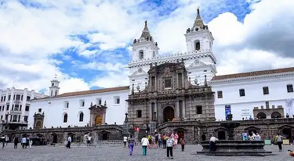
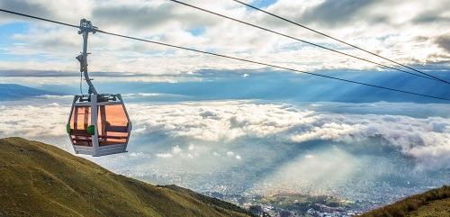
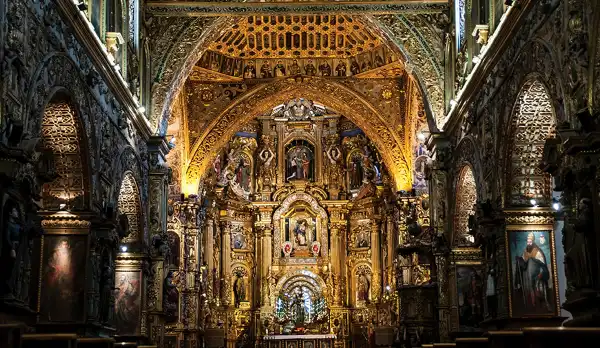

Attractions
Some popular attractions in Quito include:

Historic Center of Quito - UNESCO World Heritage Site
Mitad del Mundo - Monument marking the equator

Teleférico - Cable car offering stunning views of the city
El Panecillo - Hill with a towering statue of the Virgin of Quito
More attractions
Cotopaxi - Volcano
Plaza Grande - Visit the park

Iglesia San Francisco - historic church